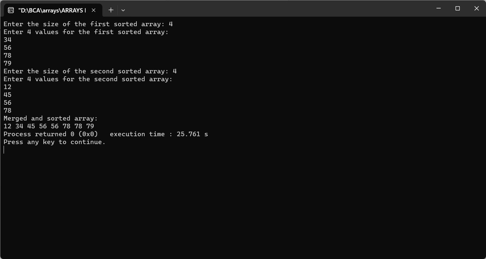

Merge the two sorted arrays into one array but in sorted order
#include
void mergeSortedArrays(int arr1[], int size1, int arr2[], int size2, int result[]) {
int i = 0, j = 0, k = 0;
while (i < size1 && j < size2) {
if (arr1[i] < arr2[j]) {
result[k] = arr1[i];
i++;
} else {
result[k] = arr2[j];
j++;
}
k++;
}
while (i < size1) {
result[k] = arr1[i];
i++;
k++;
}
while (j < size2) {
result[k] = arr2[j];
j++;
k++;
}
}
int main() {
int size1, size2;
printf("Enter the size of the first sorted array: ");
scanf("%d", &size1);
int arr1[size1];
printf("Enter %d values for the first sorted array:\n", size1);
for (int i = 0; i < size1; i++) {
scanf("%d", &arr1[i]);
}
printf("Enter the size of the second sorted array: ");
scanf("%d", &size2);
int arr2[size2];
printf("Enter %d values for the second sorted array:\n", size2);
for (int i = 0; i < size2; i++) {
scanf("%d", &arr2[i]);
}
int mergedSize = size1 + size2;
int mergedArray[mergedSize];
mergeSortedArrays(arr1, size1, arr2, size2, mergedArray);
printf("Merged and sorted array:\n");
for (int i = 0; i < mergedSize; i++) {
printf("%d ", mergedArray[i]);
}
return 0;
}
